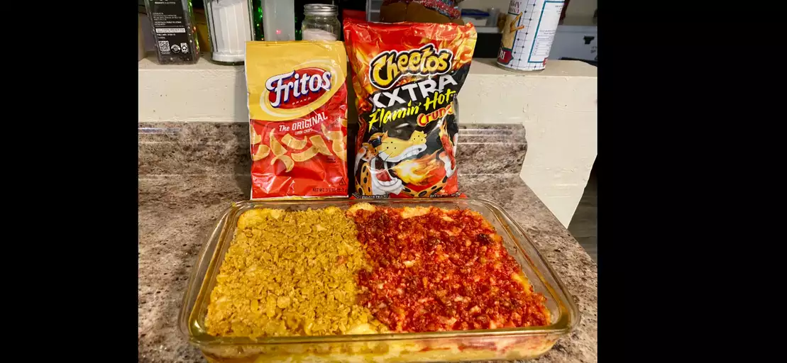

Mac and Cheese

Description
Nothing says "I am proud to be an American" quite like serving yourself a triple helping of Mac and Cheese onto your paper plate at the company picnic! This recipe is sure to convince you that the "Blue Box" is for children, and grown men eat stuff our of the oven! Make sure not to scrimp on the bread-crumbs!
Ingredients
- Cheeses: Multiple kinds, shredded
- Pasta shells (don't use macaroni)
- Milk
- Panko Bread Crumbs
- 1 Egg
Directions
- Using a spoon, greedily glob a generous amount of cottage cheese into a bowl.
- With the same spoon, schmear some of the extra cottage cheese onto a piece of toast.
- There you have it! Perfectly made Caprese Salad!

Return Home